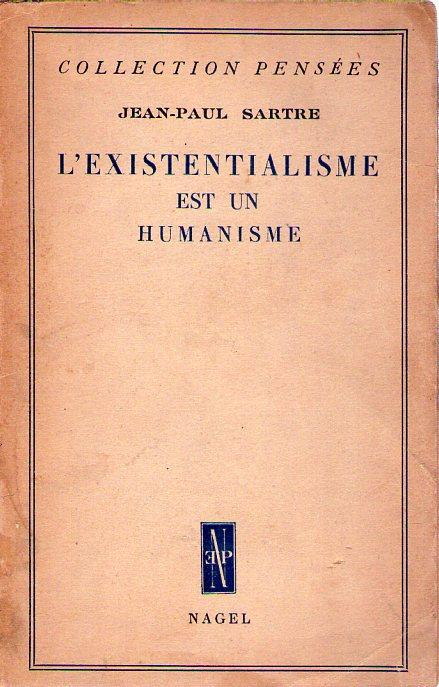

Jump to: Background | Central Thesis | Key Arguments | Ethical Implications | Misunderstandings
Background of the Lecture
Existentialism Is a Humanism originated as a public lecture delivered by Jean-Paul Sartre in Paris in October 1945, shortly after the end of World War II. The lecture was later published in written form and quickly became one of Sartre’s most widely read philosophical texts.
Unlike Sartre’s major philosophical works such as Being and Nothingness, this lecture was not intended for a specialized academic audience. Instead, it was designed to address the general public and to clarify widespread misunderstandings about existentialism.
The Central Thesis: Existence Precedes Essence
The central claim of the lecture is Sartre’s famous assertion that “existence precedes essence.” By this, Sartre means that human beings are not born with a predefined nature, purpose, or moral essence.
In contrast to objects such as tools, which are designed according to a specific function, human beings first exist and only later define themselves through their actions and choices. There is no fixed blueprint for what a human being ought to be.
Key Philosophical Arguments
Sartre develops his argument by rejecting both theological and deterministic accounts of human nature. If God does not exist, there can be no divine plan that determines human values or purposes.
As a result, individuals must take full responsibility for their choices. Every action becomes an expression of how one believes human beings ought to live, making each decision universally significant.
Ethical and Moral Implications
Far from promoting moral relativism, Sartre argues that existentialism places an immense ethical burden on the individual. To choose for oneself is simultaneously to choose for all of humanity.
This responsibility often produces anguish, a recognition of the weight of one’s freedom. Sartre insists that such anguish is not a weakness but a necessary condition of ethical seriousness.
Common Misunderstandings
Sartre responds to critics who accuse existentialism of encouraging despair, passivity, or nihilism. On the contrary, he argues that existentialism affirms human dignity by emphasizing freedom, responsibility, and commitment.
The lecture concludes by redefining humanism: not as a doctrine based on abstract ideals, but as one grounded in concrete human action and responsibility.